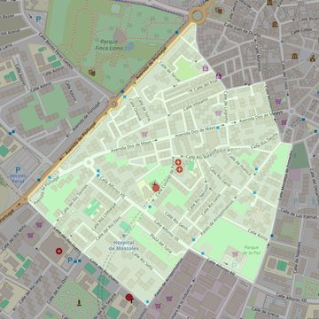

San José Obrero
- Arciprestazgo
- Móstoles
- Población
- Móstoles
- Dirección postal
- c/ Coronel de Palma, 4
- Código postal
- 28934
- Extensión
- 0,66 km² (66 ha)
- Teléfono
- 910 802 207
- Correo electrónico
- parroquia@psanjoseobrero.es
- Información demográfica
- De la parroquia · De la población (Móstoles) · Del arciprestazgo (Móstoles)


Descargar mapaLímites según decreto
" Partiendo del punto de confluencia de la Avenida de Portugal con la calle Zaragoza, arrancan por el eje de la calle Zaragoza (en dirección sureste); siguen por el eje de la calle Villaamil (en dirección noreste), por el eje de la calle Montero (en dirección sureste), por el eje de la calle Moraleja de Enmedio (en dirección suroeste), por el eje de la calle Alfonso XII (en dirección noroeste), por la calle Arroyomolinos (en dirección suroeste; ambas aceras pertenecerán a San Martín de Porres), por la calle Río Duero (en dirección noroeste; ambas aceras pertenecerán a San Martín de Porres), y por el eje de la Avenida de Portugal (en dirección noreste) hasta encontrar la calle Zaragoza, punto de partida" (29-jun-2000)